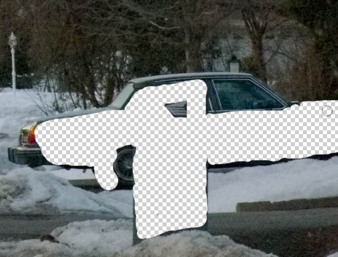
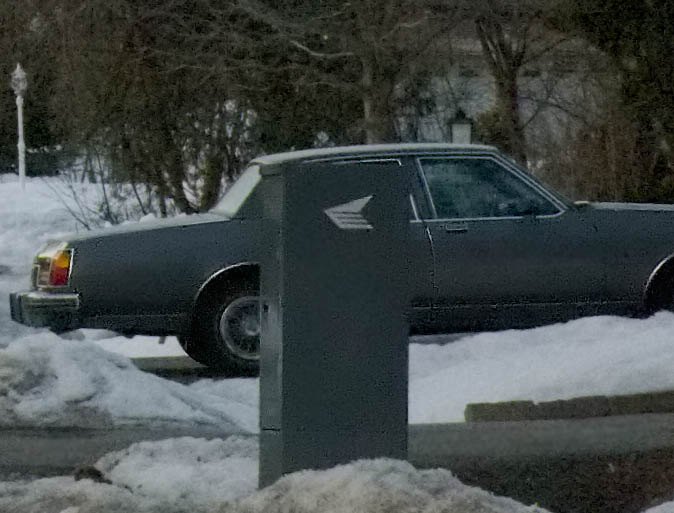
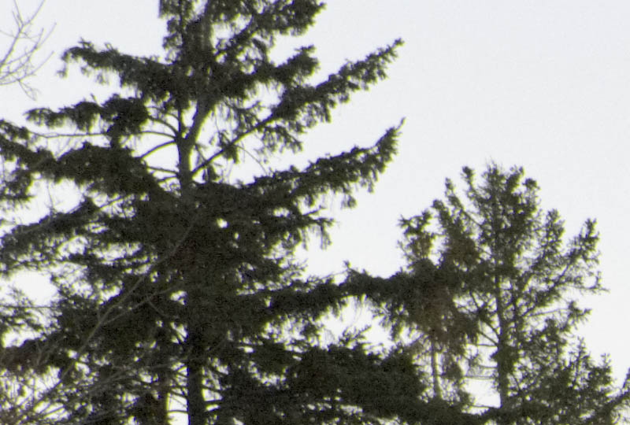
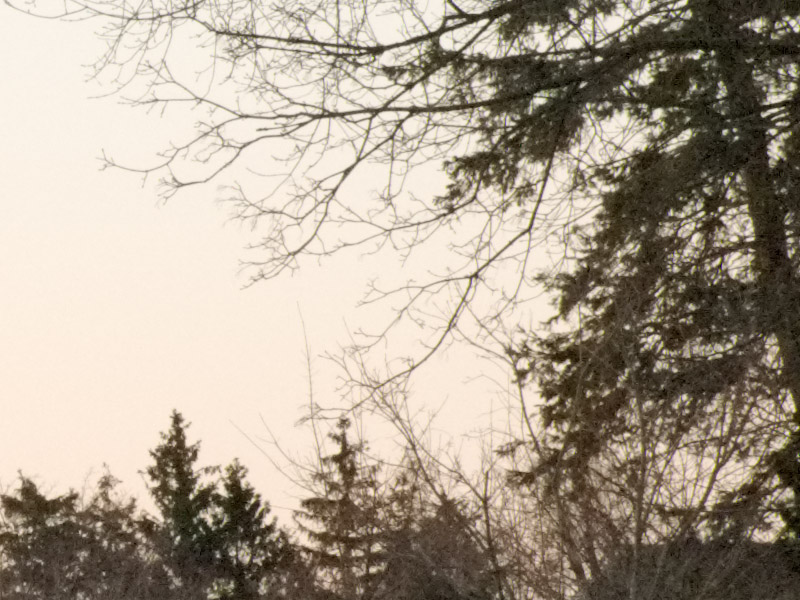

|
Post-Processing tips for sub-optimal RAW imagesVersion 1.3, © 2008, 2009 by Dale Cotton, all rights reserved Shooting RAW instead of JPEG is a critical ingredient to image quality, but it's not the magic bullet that guarantees perfection in every shot. When shooting at higher ISOs, shadow noise becomes an issue. Even when using the best lenses corner softness and other optical defects will need correction. Even with perfect focus there will be some softness to overcome. To learn some of the most useful techniques to address these issues, let's work with the following high ISO test shot I took with a typical mid-range dSLR, the Pentax K20D:
Fig. 1: 1600 ISO test shot (15.6 mb PEF) To follow along you may want to click on the link to the original PEF/RAW file above to download and work with the same image I'm using to write this. I happen to do RAW conversion in Lightroom, but most of the better converters offer the same capabilities we'll be using here – and of course Adobe Camera Raw is just a different packaging of the same image processing tools. No need to cover the basics of using a raw converter. I adjusted the white balance and tint to neutralize the image, then set the exposure and black point to put the information in the file to maximum use. I also turned off all sharpening and noise reduction. You can see the resulting Lightroom settings here:
Fig. 2: Lightroom Develop panel settings (The Hue, Saturation, and Luminance settings you see part of are a set of corrections I've come up with over time and which get automatically applied to every image. Also: the Noise Reduction Color setting should be 0, not 100.) Noise reductionFinally, I exported as a 16-bit TIFF format file, and opened that in Noise Ninja (NN). Lightroom's noise reduction is adequate for many images, but it can't fully remove even all the chroma noise in this 1600 ISO pic. (I happen to use Noise Ninja, but there are other products that other people swear by; you should be able to follow along in whatever product you use.) In NN we're going to do something a little tricky, but we start with the basics. First I tell NN to profile the noise in the image, then in the Noise Filter panel I change the settings to remove all chroma noise but no luminance noise, as you can see in part A of Fig. 3:
Fig. 3: Noise Ninja settings (Note that I also have Filter very coarse noise on and Turbo mode and Sharpening off.) I apply, then save that as a 16-bit TIFF. Next, I change the NN settings to add aggressive luminance NR and some sharpening. This smudges fine detail like crazy, but all I'm looking for is that areas of the image that are smooth-surfaced – in this case the car bodies – are smooth and noise-free. I apply, then save this as yet another 16-bit TIFF with a different name. Finally, in Photoshop I open both the TIFFs I created in Noise Ninja. I press V to switch to the move tool and Shift-drag the first, chroma-NR-only image onto the second, aggressive-NR image, which automatically turns it into a new layer, perfectly aligned over the first layer. Now I press E to switch to the Erase tool, set it to 100% with a sharp-edged brush, and erase just the areas I want to be smooth and free of noise:
Fig. 4: An area with problem noise  Fig. 5: Erasing in Photoshop (with background layer turned off to illustrate what's happening) In this case the monochromatic noise in the rest of the image is mostly masked by and blends in with the textured areas, such as trees, bushes, and pavement. But if there are areas (perhaps snow shadows and pavement) that have a bit too much noise-graininess, I can set the Erase tool to something less than full opacity and (partially) erase these areas. Once that's done I can flatten to merge the two layers together:  Fig. 6: Noise reduction final results (Noise Ninja has a nifty panel for using a brush to undo noise reduction. The reason I didn't use that for this image is because a much greater portion of the image does not need the aggressive NR. If the opposite had been the case, I could have used the undo brush tool.) Dealing with CA and soft cornersIf you followed along with the noise reduction process above, work with your cleaned version of the test image in Photoshop. Otherwise you may want to download this 7 mb Level 11 JPEG of the same thing. Duplicate the background layer, then examine the whole frame at 100% mag.  Fig. 7: Left corner problems Notice the problems in both the upper left and upper right corners. They are soft and have a mix of magenta, indigo, and lime green CA in my version of the image (because I cleverly forgot to change the CA settings in Lightroom). We need to clean up these problems before going any further. Make a rough selection around a problem corner, including all softness and CA down to about the rooftop on the left. Feather it at about 20 or 25. Open the Image->Adjust->Replace Color tool, set Fuzziness to about 50, Saturation to 0, zoom in to 300%, then click on an area of the indigo CA. Change to the + eyedropper then click on other areas with indigo CA until all indigo CA is toast. OK that then repeat for the lime green CA. (You can use the Hue/Sat./Lum. tool instead of Replace Color – Replace Color is just a little more specific.) Now apply some broad-brush USM – Radius = 1.0, Amount = 95 works for me for the left corner – so the selected area is as sharp as, but no sharper than, the rest of the picture. If necessary use the history brush at some opacity to undo areas that are too sharp.
Fig. 8: Left corner after clean-up Now repeat both CA removal and USM on the other upper corner. SharpeningNote: Your monitor will have a dramatic effect on how sharpening appears on-screen. I am using a 19" CRT at 1600x1200 res., which means each pixel is extremely tiny. LCDs in general, and larger pixel size LCDs in particular, may give a very different perception of acutance. If so, you may need to train your eye over time to compensate for the difference between what you see on-screen and what you see in the resulting print.  Fig. 9: A portion of the as yet unsharpened image One reason we applied zero sharpening in the raw converter was to not interfere with Noise Ninja's work. We can see from Fig. 6 that the ultra-fine resolution of the K20D means we will need very little USM (except, perhaps, in the corners ;) to achieve realistic acutance (edge crispness). What we don't want to do is either to introduce halos or to obliterate fine detail. Bruce Fraser, the imaging guru, was instrumental in establishing a three-prong approach to USM: a first USM pass, called capture sharpening, is applied during raw conversion, to undo the softening of the anti-aliasing filter and other in-camera losses. Then in Photoshop or other image editor a second pass, called creative sharpening, is performed that benefits any form of output. Finally, a third-pass, called output sharpening, is specific to different uses of the image file, whether small print, large print, or on-line. We'll borrow portions of this. Many people use USM without understanding how it works or exactly what Radius, Amount, and Threshold actually refer to. If that describes you, you may want to give Understanding the Unsharp Mask a quick read. All USM is destructive; more than the minimum required is unnecessarily destructive. Lightroom's USM module only goes down to 0.5 radius, which I'm finding is still too blunt a tool for the detail I'm seeing from modern cameras. Let's see if you agree: Save Fig. 6 to your hard drive, open it in Photoshop, make a couple duplicates, then apply USM with various radius settings in Photoshop at 100% magnification or larger to one of the copies. Don't bother with threshold. First try Radius = 0.1. Even at Amount = 500 there's no appreciable effect. Next try Radius = 0.2. Thanks to the extremely fine branches against the sky, we can see edge blur diminishing nicely at Amount = 500 and with no haloing. Now apply a second pass at Radius = 0.2 and Amount = 500; some haloing appears around the very thinnest branches, meaning we've gone too far in those areas, so back off until all haloing just disappears. For me, that's around Amount = 100. We've applied a total of Amount = 600 at Radius = 0.2. With another copy of Fig. 6 beside the first, experiment with Radius = 0.3. I find Amount = 145 or 150 is about where haloing starts. With yet another copy try Radius = 0.4. I find Amount = 100 is where haloing starts. Examine the three copies next to each other to see whether you agree that the finest branches look every so slightly crisper at Radius = 0.2. Of course, if you disagree then you'll want to use the radius that does look best to you.
Fig. 10: USM, Amount = 600 at Radius = 0.2 Note: Camera/lens combinations with less resolution will have proportionately less fineness of detail and so will need a proportionately larger radius in USM. Radius = 0.3 may be perfectly suitable for a 10 mp camera and good lens, for example. Finally, go back to the full scale image, duplicate the background layer, rename it to Minimal USM or similar, then apply the small-radius USM you settled on above, whether Radius = 0.2 or something else. Use whatever Amount you are comfortable with up to the Amount you found as being the maximum before haloing sets in (Amount = 600 in the above example). It should look pretty good by now, but areas other than the finest branches may still benefit from a bit of crispening. Try a wider radius but smaller amount of USM, such as Amount = 50 at Radius = 0.5. This will probably halo the finest branches and perhaps other areas, so examine the whole image critically at 100% mag. and use the History Brush to undo as and where needed. Anything that should be soft due to DOF blurring may also need some undoing. One thing to bear in mind is that you're viewing the image on a monitor, which is roughly a 100 ppi device, and which therefore gives you a much coarser view of the image than a typical 180 to 360 ppi print would. It takes some practice to separate the amount of softness in what you seen on-screen that's due to the coarseness of the monitor and the amount that would remain if printed. A useful exercise is to print an image with zero USM, then again with increasing levels of USM, to get a feel for what an image that is properly sharpened for printing looks like on-screen. We've actually done two or three different applications of USM. Once applied to just the problem areas (corners); once applied at an extremely small radius to the entire image but undoing where necessary, and optionally once at a slightly wider radius but low amount. If you take away nothing else from all this, let it be that the amount and radius of USM you apply needs to vary from one part of the image to another. There is no one USM setting that will optimally sharpen every part of every image. For me, the Minimal USM layer is appropriate for printing at relatively normal print sizes. If you need to print super-large, you might need to up-sample then apply more USM. If you need to create a web or e-mail version of the image, the amount of USM applied for the Minimal USM layer is pretty much irrelevant – you'll likely need to re-sharpen the down-sampled image. Update, 2009: Since writing this, I've hit on a shortcut that should work for most dSLR output. Do a first pass of USM at 1.0 radius and a small threshold value, such as 2, with a conservative amount value to prevent halos. Next pass use the smallest radius, such as 0.2 or 0.3, you've settled on to touch up. Parting thoughtsEverything in this tutorial has been directed at retaining the maximum goodness of the original image file and introducing as little trauma as possible while correcting some common problems. I'm not thereby trying to impose a particular aesthetic on anyone; if you're creating art and want to goose up contrast, saturation, acutance, graininess, or whatever, that's your call as an artist. Take whatever's useful and leave the rest behind. |


{kind=link}